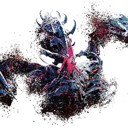

Ultimate Berk
Son boss ▶ 1:12
wipe Kayaların arkasına saklan ▶ 1:15
Boss ortaya uçar ve kenarlarda dört kaya belirir. O büyüyü yaparken herkes bir kayanın arkasına saklanır — her birinin arkasındaki yeşil alan güvenli. Açıkta kalan tek vuruşta ölür. Büyü çubuğunu izle.
Kanlı dönüş ▶ 1:33
Pizza dilimi bir vuruştan sonra etrafında parlak kıvılcımlar çakar ve dönerek bir oyuncuyu kovalar, kanama ekler. Yolundan uzak dur; yeni oyuncular burada bir kaçınma, iksir veya dokunulmazlık harcayabilir.
wipe Stagger çubuğu ▶ 2:03
Pençelerini kaldırınca bir stagger çubuğu belirir — hızla kır, yoksa grup ölür. Stagger yeteneklerini bu ana sakla; kırılan çubuk onu birkaç saniye bedava hasar için sersemletir.